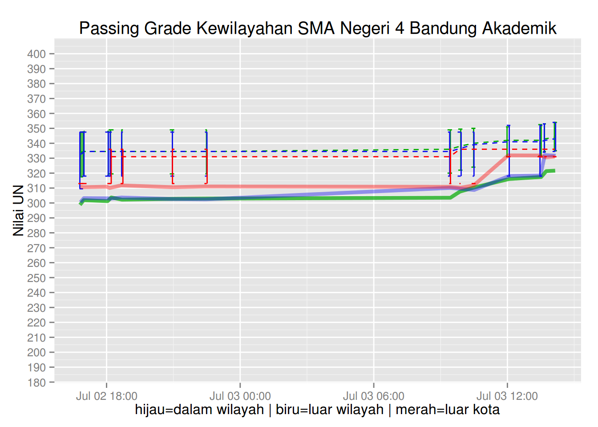
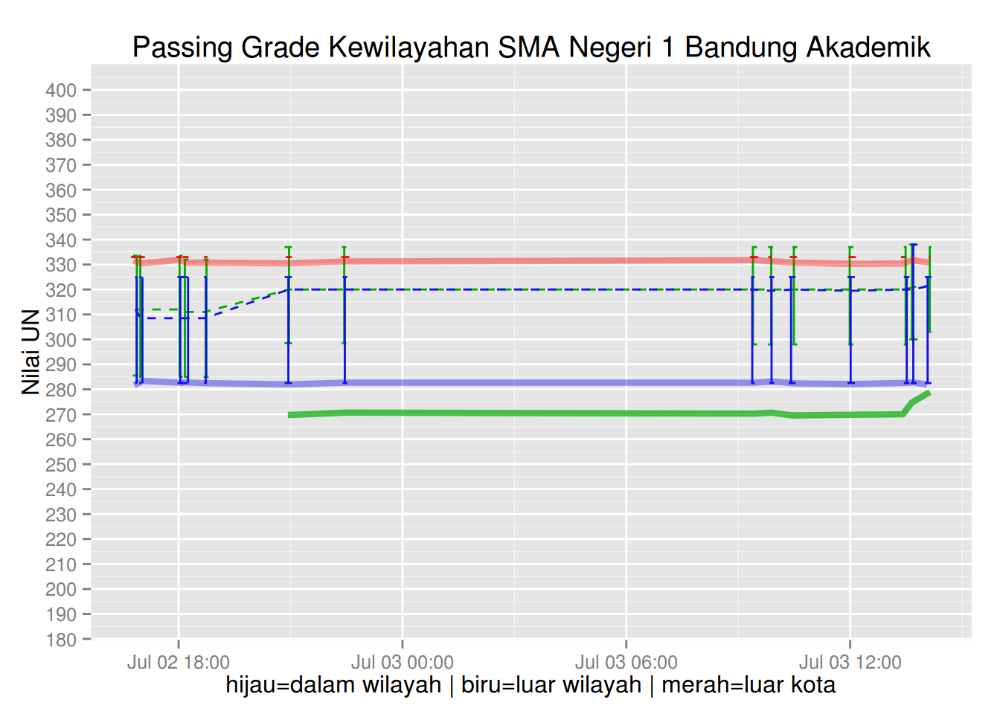
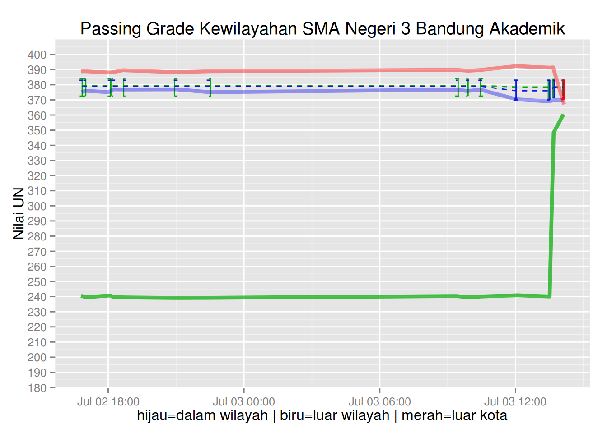

Analisa distribusi hasil seleksi murid diterima PPDB SMA Kota Bandung 2015
Hendy Irawan
July 2, 2015
Data Pendaftar dan Hasil Seleksi Murid Diterima PPDB SMA Kota Bandung 2015
Hendy’s note: ~/Dropbox/Hendy_Projects/soluvas-scrape/sample/ppdb
Requirements
sudo apt-get install libpq-devinstall.packages('dplyr')
install.packages('ggplot2')
install.packages('scales')
install.packages('RPostgreSQL')Analysis
library(dplyr)
library(plyr)
library(pander)
library(ggplot2)
library(scales)library(RPostgreSQL)
con <- dbConnect(dbDriver('PostgreSQL'),
host='localhost', user='postgres', password='bippo',
dbname='scrape_scrape_dev')
# Options:
#choice_id yang relevan:
#
#* 615 = SMA Negeri 4 Akademik
#* 685 = SMA Negeri 18 Akademik
#* 680 = SMA Negeri 17 Akademik
#* 620 = SMA Negeri 17 Akademik
#* 600 = SMA Negeri 17 Akademik
plot_pg <- function(option_id, name) {
rs <- dbSendQuery(con, paste("
-- SMA4, SMA18, SMA17, SMA6
SELECT option_id, snapshottime,
registeredforeignercount daftar_lk,
registeredforeignerdetailcount daftar_lw,
registeredinsidercount daftar_dw,
filteredforeignercount terima_lk,
filteredforeignerdetailcount terima_lw,
filteredinsidercount terima_dw,
CASE WHEN registeredforeignercount > 0 THEN round(filteredforeignercount*100/registeredforeignercount) || '%' ELSE '' END rasio_terima_lk,
CASE WHEN registeredforeignerdetailcount > 0 THEN round(filteredforeignerdetailcount*100/registeredforeignerdetailcount) || '%' ELSE '' END rasio_terima_lw,
CASE WHEN registeredinsidercount > 0 THEN round(filteredinsidercount*100/registeredinsidercount) || '%' ELSE '' END rasio_terima_dw,
round(filteredforeignerminscoretotal1::numeric, 1) pg_lk,
round(filteredforeignerdetailminscoretotal1::numeric, 1) pg_lw,
round(filteredinsiderminscoretotal1::numeric, 1) pg_dw,
round(filteredforeignermeanscoretotal1::numeric, 1) mean_lk,
round(filteredforeignerdetailmeanscoretotal1::numeric, 1) mean_lw,
round(filteredinsidermeanscoretotal1::numeric, 1) mean_dw,
round(filteredforeignerstddevscoretotal1::numeric, 1) stddev_lk,
round(filteredforeignerdetailstddevscoretotal1::numeric, 1) stddev_lw,
round(filteredinsiderstddevscoretotal1::numeric, 1) stddev_dw,
round(filteredforeignerlowscoretotal1::numeric, 1) low_lk,
round(filteredforeignerdetaillowscoretotal1::numeric, 1) low_lw,
round(filteredinsiderlowscoretotal1::numeric, 1) low_dw,
round(filteredforeignerhighscoretotal1::numeric, 1) high_lk,
round(filteredforeignerdetailhighscoretotal1::numeric, 1) high_lw,
round(filteredinsiderhighscoretotal1::numeric, 1) high_dw,
round(filteredforeignermaxscoretotal1::numeric, 1) max_lk,
round(filteredforeignerdetailmaxscoretotal1::numeric, 1) max_lw,
round(filteredinsidermaxscoretotal1::numeric, 1) max_dw
FROM ppdbbandung2015.optionapplicantsnapshot
WHERE option_id = ", option_id, "
ORDER BY option_id, snapshottime;
"));
df <- fetch(rs, n=-1)
df <- df[!is.na(df$pg_dw),]
plot <- ggplot(df, aes(x=snapshottime, y=pg_dw)) +
scale_y_continuous(name='Nilai UN', limits=c(250, 400), breaks=seq(150, 400, by=10)) +
scale_x_datetime(name='hijau=dalam wilayah | biru=luar wilayah | merah=luar kota') +
geom_errorbar(position=position_jitter(height=0), color='#00aa00',
aes(ymin=low_dw, ymax=high_dw)) +
geom_line(aes(y=pg_dw), color='#00aa00', size=1.5, alpha=0.7, position=position_jitter(height=1)) +
geom_line(aes(y=mean_dw), color='#00aa00', linetype='dashed') +
geom_errorbar(position=position_jitter(height=0), color='#1111ee',
aes(ymin=low_lw, ymax=high_lw)) +
geom_line(aes(y=pg_lw), color='#1111ee', size=1.5, alpha=0.4, position=position_jitter(height=1)) +
geom_line(aes(y=mean_lw), color='#1111ee', linetype='dashed') +
geom_errorbar(position=position_jitter(height=0), color='red',
aes(ymin=low_lk, ymax=high_lk)) +
geom_line(aes(y=pg_lk), color='red', size=1.5, alpha=0.4, position=position_jitter(height=1)) +
geom_line(aes(y=mean_lk), color='red', linetype='dashed') +
ggtitle(paste('Passing Grade Kewilayahan', name))
return(plot)
}
plot_pg(615, 'SMA Negeri 4 Bandung Akademik')
plot_pg(685, 'SMA Negeri 18 Bandung Akademik')plot_pg(680, 'SMA Negeri 17 Bandung Akademik')
plot_pg(620, 'SMA Negeri 6 Bandung Akademik')
plot_pg(600, 'SMA Negeri 1 Bandung Akademik')
plot_pg(610, 'SMA Negeri 3 Bandung Akademik')
invisible(dbDisconnect(con))